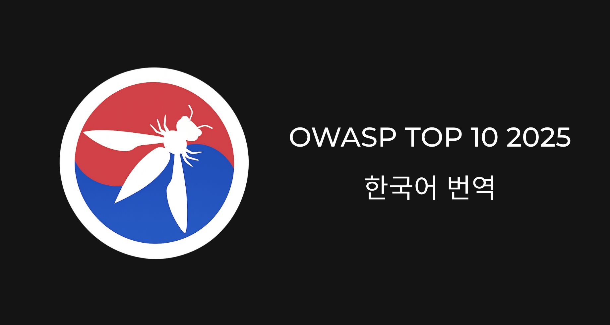

OWASP TOP 10 2025 한국어 번역
OWASP TOP 10 2025 버전의 한국어 번역 및 검수에 참여하였습니다.
사이버 보안, AI 보안 및 사회공학기법 프로젝트들을 소개합니다.
OWASP TOP 10 2025 버전의 한국어 번역 및 검수에 참여하였습니다.
웹 보안 프로젝트 준비 중...
사회공학기법 프로젝트 준비 중...
AI 프로젝트 준비 중...
기타 프로젝트 준비 중...
보안 이슈, 학습 내용 정리, 사회공학기법 등 보안 관련 포스팅은 모두 블로그에서 확인할 수 있습니다.

잊힌 계정, SNS 공개 범위, 개인정보 노출 여부를 스스로 점검하는 방법을 정리했습니다. 정부 서비스와 간단한 체크리스트로 일상에서 실천할 수 있는 보호 습관을 제안합니다.

CTF·워게임에서 자주 등장하는 Web, Pwn, Reverse, Crypto, Forensic, Misc 카테고리를 한 번에 정리했습니다. 각 유형별 특징과 문제를 풀 때 필요한 기초 역량을 함께 다룹니다.

정보보안기사, 디지털포렌식전문가부터 CISSP, Security+, OSCP까지 주요 보안 자격증을 비교했습니다. 응시 조건과 비용, 난이도, 활용도를 정리해 진로 선택에 참고할 수 있도록 했습니다.

AI가 보안 탐지와 대응 자동화에 어떻게 활용되고 있는지, 그리고 공격 도구로는 어떻게 악용되는지를 정리했습니다. AI 시대에 보안 담당자가 가져야 할 태도와 역할 변화에 대한 고민을 담았습니다.